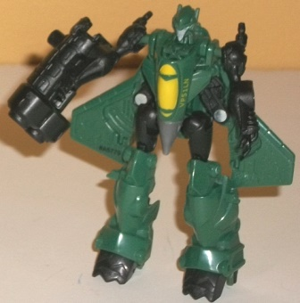

Heavytread
Heavytread
Size : Mini-Con
Difficulty of Transformation : Very Easy
Individual Rating : 6.8
Mini-Con
Assault Team (Heavytread, Runway, & Windshear)
Allegiances
: Minicon
Size
: Deluxe-priced Mini-Con 3-pack
Color Scheme
: Black, dark military
green, and some semi-metallic gray, very light chalky gray, and yellow
Overall Rating
: 6.7
Heavytread
Size
: Mini-Con
Difficulty of Transformation
: Very
Easy
Individual Rating
: 6.8
Heavytread is a tank,
and although he's a Minicon, he's the biggest Mini-Con mold I've ever seen--
yes, even slightly bigger than
Armada Rollout
.
This mode is mostly pretty good-looking, though it does have a few oddities--
the biggest one being that the turret is a little too far back for a tank,
and unfortunately the turret can't rotate or even move up-and-down, either.
The front ends are also somewhat obviously his robot feet, and he has an
obvious clip for the combined mode sticking out of the back end. Heavytread's
color scheme is mostly black, with a fair amount of dark military green,
which certainly fits in with a military alt mode. He has just a touch of
yellow for accent visible in this mode, and his treads are painted green,
but by and large there's some large black sections of plastic in this mode
that are unpainted. (The turret barrel is also painted green-- rather unnnecessarily--
which cuts down on available paint apps for other areas.) This is all the
more unfortunate given that Heavytread has a lot of intricate mold detailing
in this mode, such as vents, armor plating, and the "hatches" for his turret.
Heavytread's male Minicon port is on the top of the rear of the turret
in this mode, while his female "normal" Minicon port is almost directly
below it, on the underside of the tank.
Heavytread's transformation
to robot mode is quite simple; it just consists of flipping down the rear
half of his treads, than "opening up" the turret to reveal his arms and
body while flipping up his feet and positioning his gun barrel in one of
his fists as an actual gun (which I'm honestly surprised isn't done on
more tank TFs, come to think of it). Because of the fact that Heavytread
forms the combined form's legs, his proportions here are a little off--
for such a buff-looking guy, his arms are a tad small and hollow, and his
legs go up too far. His chest is also sunken in, though as an aesthetic
choice I don't mind this last part. More dark military green in visible
in this mode, but otherwise Heavytread's colors are pretty much the same,
and his paint apps are still sparse. That said, his mold detailing on his
robot mode continues to look good in this mode, with his head looking particularly
nice-- with the "one eye with a targeting visor" look, his robot face fits
right in with other Armada Minicons. For articulation, Heavytread can move
at the shoulders and forward at the hips-- slightly below-average for a
Minicon. Because of his engineering, Heavytread's legs can't move backwards
without splitting open his entire torso (which can happen too easily anyways);
this is definitely my biggest single issue with this mold.
Runway

Size
: Mini-Con
Difficulty of Transformation
: Very
Easy
Individual Rating
: 7.0
Runway follows his
Armada
predecessor
in having a jet for an alternate mode. The top of this
mode looks pretty good- the proportions are generally realistic, though
the wings are a little undersized and the thrusters are definitely oversized.
Like Heavytread, he's rather large for a Minicon, though not QUITE to the
extent that Heavytread is. The big downside to this mode is, unfortunately,
a downside that plagues many jet Transformers-- he's got some robot parts
sticking out pretty obviously below the main body of the jet, and thus
looks much "thicker" than a jet should be and not nearly as aerodynamic.
The robot arms are the biggest offenders, just sticking right out on the
sides there and not really even attempting to be hidden. His head is also
pretty obvious underneath his nosecone from any angle approaching a side-on
view. The general shade of Runway's lower legs blend in a little better
to the back end of his jet mode, but they still stick out below what should
be the bottom of the jet far too much. Runway's color scheme is like his
other teammates, in that he's mostly green and black with a bit of gray
and some yellow highlights. Runway's more green than his teammates, which
is a bit odd since he'd probably be the one who'd look the best being mostly
black given his alt mode-- but the overall color scheme still looks pretty
good, particularly in this mode with all the yellow to break up the green
and black. The mold detailing is also pretty well-done, with little windvanes
and the like anywhere that it's reasonable to put them. Runway has a male
Minicon port on the top of this mode in front of his rear thrusters, while
his female Minicon port is on the underside, on the bottom a bit behind
his nosecone.
Runway's robot mode
transformation is exceedingly simple, just consisting of unfolding his
legs, folding up his cockpit to become his chest, and then removing his
rear thrusters, which can plug onto a port on either of his arms to form
a large hand cannon. (This is a pretty nice touch-- it's not often that
Minicons get their own handheld weapons.)Â There is another male Minicon
port on the underside of the cannon as well for more connection possibilities.
Because of his transformation, Runway shares the standard jet-former design
of having his wings on his back and the cockpit-chest. I wish his wings
could've folded up a little bit more, but they still look pretty good all
around, and other than said wings everything works well in this mode with
no other extras. Runway's proportions are bit bottom-heavy, with disproportionately
large legs and relatively skinny arms-- though this is required for the
combined transformation, and the proportional maladies aren't so severe
here that they make the toy look outright goofy-- just a bit more "stylized".
Speaking of stylized, Runway follows his teammates' lead in having a rather
Prime-like aesthetic here, which relatively simple detailing on his robot
bits and a nose-less face. Thus, he doesn't quite fit in with the Armada
Minicons in that respect, but it still all looks pretty good in and of
itself. His paint detailing is also lacking a bit here, making this mode
looks a little boring color-wise. For articulation, Runway can move at
the shoulders, hips, knees, and slightly at the toes-- about average for
his size. Given his large feet, he's also quite stable.
Windshear
Size
: Mini-Con
Difficulty of Transformation
: Very
Easy
Individual Rating
: 6.3
Windshear's alternate
mode is a helicopter, and for the most part it is pretty well-proportioned--
plus, the toy is also closer to the size of a regular Armada Minicon than
her two teammates. There are two big exceptions to her good proportions
here, and they're two very obvious extras-- namely, her folded up legs,
very clearly sticking out of the bottom of this mode. They're definite
eyesores and my least favorite part about this toy. Her arms stick out
a little bit as well on the sides, but they're mostly effectively camoflauged
as side missiles. Both of her rubbery-plastic propellers can spin quite
freely, always a good thing. Her mold detailing is a bit more intricate
than her teammates', perhaps because of her smaller size-- all of the necessary
details are there plus a lot of little mechanical details on her vehicle
bits, such as lines that represent armor plating, a fake rear landing gear,
and the like. Her cockpit is particularly well-detailed, not only when
it comes to the mold detailing but also with paint detailing-- the yellow
really sticks out there. Unfortunately, except for her Minicon symbol and
a military string of numbers on her tail, her windows are the only clearly
visible parts that are painted in this mode. Her green parts and gray propellers
help to break up the front section well enough, but she really could've
used more paint on the rear half of this mode to keep the black from obscuring
most of her fine details. Windshear has a rotary machine gun weapon that
fits either under her nose or on the sides of her arm-missiles. This little
accessory has both a female and a male Minicon port on it, allowing for
a good amount of customization. Windshear's female Minicon port on her
main body is right under the tip of her nose-- a bit of an odd placement,
really.
Windshear's transformation
is also quite simple, just consisting of folding her cockpit down to become
her chest while folding her arms and legs out. You can fold her propellers
over each other to form a two-pronged propeller if you wish, but I prefer
the four-bladed look behind her back. I do like the propellers behind her
back helping to enhance her silouhette, but the helicopter tail only folds
back a little bit, being the one extra in robot mode that is a rather big
eyesore. From her headsculpt and thin, high-heeled feet, it's obvious in
this mode that she's a female Minicon, and generally her proportions work
with it quite well. However, a side effect of her high-heeled feet is that
she's not very stable on her own legs, all but requiring the helicopter
tail to act as a third leg of sorts here. Her color breakup is much better
in this mode, despite only her face and feet having additional paint apps
here; the green breaks up her black much more effectively in this mode,
and just makes her look more visually interesting overall. She follows
her teammates' example of having a Prime-like aesthetic in robot mode,
with relatively little, smoother detailing on her robot parts, and a gray
face with no nose. Her round head is a nice contrast to Runway and Heavytread's
angular and blocky heads, respectively, and as a team the three look good
next to each other. For articulation she can move at the shoulders, hips,
and knees-- about what you'd expect on a Minicon.
Centuritron
(Combined Form)
Difficulty of Transformation
: Hard
Individual Rating
: 6.7
Centuritron uses Windshear as the head and chest, Runway as the main body and arms, and Heavytread as the legs and waist. The "core" of this mode looks pretty solid-- the arms are definitely arms, the legs are clearly legs, and the like-- but Centuritron does suffer from some proportional maladies, mostly the fact that his main body trunk is too long. His upper arms-- made from Runway's upper legs-- are also way too small proportionally. The biggest issue with this mode is the kibble, though. Runway's wings frame the main body well enough, but there's a BIG gap between the two cockpits that form Centuritron's chest, and they're only covered up slightly by Runway's obvious arms-- it just looks bad, quite frankly. Heavytread's arms also hang out blatantly on the sides of the upper legs-- you can fold them behind the legs, but them you can't move Centuritron at the knees. I'm also not fond of the folded up propellers right behind the head-- it just looks weird, especially since they can't "lock in" anywhere. On the plus side, Windshear's entire rear section of her helicopter mode folds up quite well behind Centuritron's upper back, and his legs themselves look mighty good while also being stable. All three of the Minicons' weapons also combine to form a larger weapon for Centuritron in a pretty nice-looking manner. The color balance for Centuritron keeps just about as much dark green visible as black, and with more yellow highlights showing in this mode, Centuritron doesn't look nearly as barren paint-wise as some of his component Minicons (arms aside). The headsculpt is also very well-done, sticking with the examples of Runway and Windshear and having a Prime-like aesthetic with fairly simple, curving lines. I love the continuing theme of keeping all the faces gray; it helps them stick out more. For articulation, Centuritron can move at the shoulders, elbows, hips, knees, and slightly at each toe, which is decent enough considering both the size and that he's a Minicon combiner.
The Mini-Con Assault Team has a pretty cool combining gimmick, and I love the shared color scheme between the three; given that each Minicon is a fully functional Transformer, you're getting a lot of playablity at the deluxe pricepoint, here. That said, due to this combining gimmick, all three of the Minicons and their combined Centuritron form all have some proportional and kibble issues-- the latter issues particularly evident on Centuritron and Windshear. The combined mode is a bit finicky, too. If you miss Minicons or simply care more about playability than perfect proportions and articulation, this set's a mild recommendation-- but if you are in the Generations line for more articulated, well-proportioned Transformers, it'd probably be best to stay away from this set.
Reviews by Beastbot